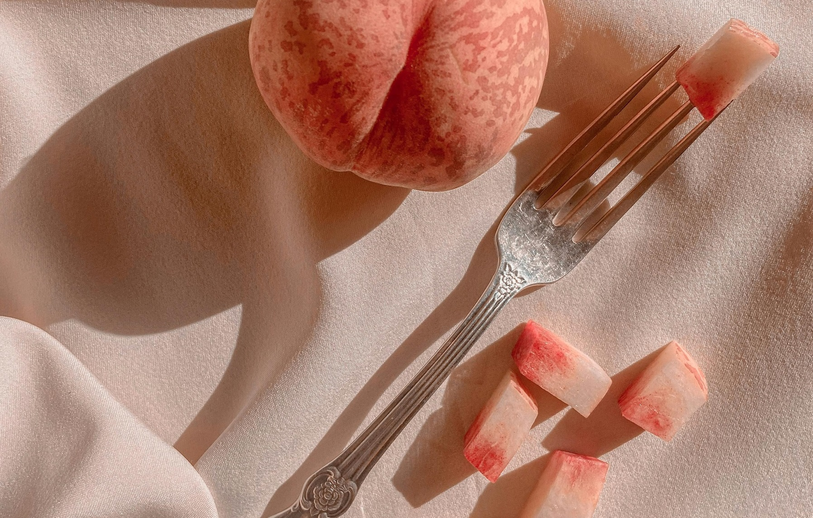

Craftowe widelce
Witaj w świecie wyjątkowych, ręcznie tworzonych widelców – gdzie tradycja spotyka się z nowoczesnym rzemiosłem. Nasze produkty to coś więcej niż sztućce – to wyraz stylu, pasji i szacunku do detali. Każdy widelec to rezultat godzin precyzyjnej pracy, miłości do rzemiosła oraz głębokiego przekonania, że piękno może tkwić nawet w codziennych przedmiotach. Tworzymy nie tylko funkcjonalne narzędzia, ale i małe dzieła sztuki użytkowej, które mogą odmienić codzienne doświadczenia przy stole.
Odkryj piękno w naszych craftowych widelcach
Każdy widelec opuszczający naszą manufakturę jest małym dziełem sztuki. Z dbałością o każdy detal, łączymy estetykę z funkcjonalnością, tworząc produkty, które cieszą nie tylko oko, ale i duszę. Inspirowani naturą, klasycznym wzornictwem i nowoczesnymi trendami, projektujemy widelce, które zachwycają formą i jakością wykonania. Dla nas liczy się każdy łuk, każde szlifowanie, każdy detal – bo wiemy, że to właśnie one tworzą całość, która budzi zachwyt.

Nowoczesne i zrównoważone procesy produkcyjne
Stosujemy technologie przyjazne środowisku i korzystamy z lokalnych źródeł materiałów. Dzięki temu nasze widelce powstają w duchu zrównoważonego rozwoju – z szacunkiem do natury i tradycji. Dbamy o minimalizację odpadów i zużycia energii, wybierając procesy, które mają możliwie najmniejszy wpływ na środowisko. Współpracujemy z lokalnymi dostawcami i rzemieślnikami, wspierając tym samym regionalną gospodarkę i zachowując unikalny charakter naszych produktów.
Najwyższa jakość dzięki najlepszym surowcom
Wykorzystujemy tylko certyfikowaną stal nierdzewną oraz naturalne drewno pochodzące z polskich lasów. To gwarancja trwałości, higieny i wyjątkowego wyglądu każdego naszego produktu. Surowce wybieramy z ogromną starannością, kierując się nie tylko estetyką, ale również funkcjonalnością i odpornością na codzienne użytkowanie. Drewno jest odpowiednio sezonowane i impregnowane naturalnymi olejami, a stal szlifowana i polerowana ręcznie – wszystko po to, by nasze widelce służyły przez długie lata i zachwycały swoją formą.
O nas - manufaktura craftowych widelców
Jesteśmy małą, rodzinną firmą z serca Polski, która od lat z pasją tworzy sztućce inne niż wszystkie. Wierzymy, że codzienne przedmioty mogą nieść wartość emocjonalną i estetyczną. Dla nas liczy się autentyczność – nie produkujemy masowo, lecz skupiamy się na jakości, relacjach i przekazywaniu historii przez przedmioty. Każdy widelec, który opuszcza nasz warsztat, ma w sobie cząstkę naszej pasji i zaangażowania. To właśnie dzięki tej filozofii zdobywamy zaufanie klientów, którzy szukają czegoś więcej niż seryjnych produktów.
Nasza historia
Początki sięgają lat 90., kiedy to nasz założyciel, inspirowany dziedzictwem rzemieślniczym regionu, postanowił stworzyć coś unikalnego. Z małego warsztatu przekształciliśmy się w manufakturę, zachowując ducha ręcznej pracy. Pierwsze egzemplarze powstawały w domowym garażu, przy użyciu prostych narzędzi i ogromnej determinacji. Z biegiem lat doskonaliliśmy nasze techniki, inwestowaliśmy w rozwój i zdobywaliśmy wiedzę, która dziś pozwala nam tworzyć produkty na światowym poziomie, bez utraty lokalnego charakteru.
Kim jesteśmy?
Zespół naszej manufaktury to ludzie z pasją do rzemiosła, designu i jakości. Łączymy tradycyjne techniki z nowoczesnym podejściem, by dostarczać klientom produkty, które przetrwają pokolenia. Każdy z nas wnosi do firmy swoje unikalne umiejętności – od projektowania, przez obróbkę metalu i drewna, po kontakt z klientem. Pracujemy w atmosferze wzajemnego szacunku i wspólnego celu: tworzyć przedmioty, które mają znaczenie. Dla nas to nie tylko praca – to misja, która napędza nas każdego dnia.
Dlaczego warto kolekcjonować craftowe widelce?
Craftowe widelce to nie tylko użytkowe przedmioty – to również element kolekcjonerski, który zyskuje na wartości z biegiem lat. Każdy egzemplarz ma swoją historię i niepowtarzalny charakter. Zbierając nasze widelce, budujesz kolekcję, która może być przekazywana z pokolenia na pokolenie, stając się częścią rodzinnej tradycji. To także doskonały sposób na wyrażenie siebie – przez wybór formy, materiału, wykończenia. W świecie pełnym masowej produkcji, nasze produkty oferują unikalność, autentyczność i ponadczasowe piękno.
Skontaktuj się z nami
Jesteś zainteresowany naszymi craftowymi widelcami? Napisz do nas na kontakt@widelce24.pl – z przyjemnością odpowiemy na każde pytanie, doradzimy w wyborze odpowiedniego modelu i podzielimy się naszą wiedzą. Niezależnie od tego, czy szukasz wyjątkowego prezentu, czy chcesz wzbogacić swój domowy stół o coś naprawdę unikalnego – jesteśmy do Twojej dyspozycji.